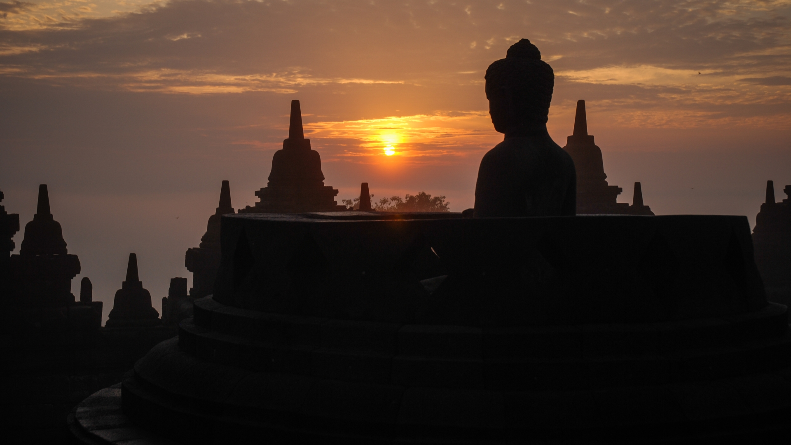
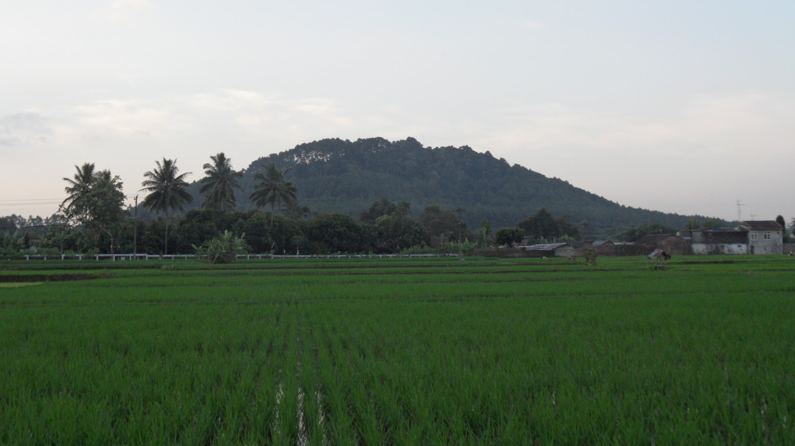

Magelang, Yogyakarta'nın yaklaşık 40 km (25 mil) kuzeybatısında bulunan dokuzuncu yüzyıldan kalma bir Budist anıtı olan Borobudur'a en yakın büyük şehirdir. Şehir merkezine sadece 12 km uzaklıkta, Candisari köyü yakınlarındaki 8. yüzyıldan kalma bir Hindu tapınağı olan Candi Selogriyo yer almaktadır. Yine Magelang hükümdarlığında bulunan Canggal Tapınağı, ilk Mataram Krallığı hükümdarı Sanjaya adını taşıyan bir Sanskritçe transkripsiyona sahiptir.
Kasabanın Hollanda Doğu Hint Adaları döneminden kalma bir dizi binası, mirasın simgesi haline geldi. Karesidenan Kedu binası, şimdi Pangeran Diponegoro Müzesi olarak biliniyor ve burada Prens Diponegoro, Java Savaşı sırasında (1825-1830) Hollanda sömürge hükümeti tarafından tutuklandı. Prens'in oturduğu sandalye müzede kaldı. Diponegoro'ya ait olduğuna inanılan bir tırnak sandalyenin kolunda kalıyor. Şerefine bir heykel, Magelang'ın kasaba meydanında duruyor.
Jalan Pemuda ("Gençlik Sokağı"), Magelang'ın Pecinan'ıdır (Çin Mahallesi). Tek yönlü 1,5 kilometre uzunluğundaki (0,93 mil) yol iş merkezidir ve mağazalar, bir mini market ve restoranlar içerir. Eski bir demiryolu boyunca uzanan yol, çekçek için ayrılmış dar bir bölümle bölünmüştür.
Alun-alun veya şehir meydanı şehir merkezinde yer almaktadır. Bölgede, kuzeyde Magelang'ın tek sineması olan Matahari ve Gardena mağazaları, Trio Plaza ve BCA kulesi vardır; güneyde bir polis karakolu, BPD Bankası binası ve Jalan Pemuda boyunca bir Konfüçyüs tapınağı. Batıda, yerel olarak Kauman olarak bilinen şehrin en büyük camisi yatıyor. Kasaba meydanının çevresinde 15 metre yüksekliğinde (49 ft) bir su kulesi ve ayrıca ata binen bir Diponegoro heykeli bulunmaktadır.
Magelang'da çok sayıda spor salonu var. Örneğin 2006 yılında bir golf sahası açıldı: Borobudur International Golf and Country Club. Abu Bakrin futbol stadyumu Jl. Golf sahasına yakın olan Tidar. Ayrıca, Gedung Olah Raga "Samapta", Kuzey Magelang'ın alt bölgesindeki popüler bir spor mekanıdır. Bölge, statüsünü Orta Java Spor Merkezi'ne yükseltme planı nedeniyle geliştiriliyor. Progo nehrinin doğusunda yer almaktadır. Stadion Gemilang Kabupaten Magelang, Blondo kasabasında yer almaktadır. 15.000 kişilik kapasiteye sahip olup daha çok futbol maçları için kullanılmaktadır.
Tidar Dağı, Magersari, Güney Magelang'da ve Harp Akademisi (Akmil) kompleksi içinde yer almaktadır. Burada İran'dan Syekh Subakir'in kalıntıları yatıyor.
Magelang Şehri küçük bir şehir olmasına rağmen, birkaç üniversite, kolej ve akademiye sahiptir. En az Magelang City'de Endonezya Askeri Akademisi (Akmil), Muhammadiyah Üniversitesi (Unimma), Tidar Üniversitesi (Untidar), STMIK Bina Patria ve Tirta Wiyata Mühendislik Akademisi (Akademi Teknik Tirta Wiyata) gibi altı üniversite bulunmaktadır ve Sağlık Bakanlığı Semarang Sağlık Politeknik şube kampüsü.